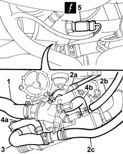
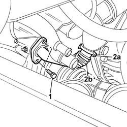
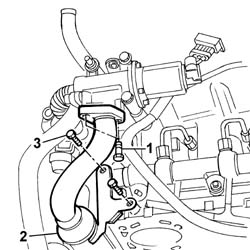
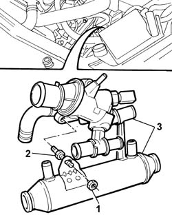

1088C30 THERMOSTAT UNIT - R.R.
- Path
- Procedures > 10 ENGINE > 1088 ENGINE COOLING > 1088C WATER PUMP AND THERMOSTAT > 1088C30 THERMOSTAT UNIT - R.R.
- Kind
- repair procedure (removal / refitting; the operation number is the code)
- Applies to
- engines: 2.4 JTD 10V; all production periods
- Interactive page
- https://sloeber94.github.io/elrnDB-lThss/en/#/76205
Applies to: all engines; all production periods
 Removing
Removing
 Refitting
Refitting- Position the vehicle on a lift.
See in Op. 1016A10
- Raise the lift.
See in Op. 7055B54 PROTECTION/GUARD under engine - R.R.
See in Op. 1048A50
See in Op. 1048A21
- Have a suitable container for collecting the coolant ready.
- Disconnect the lower pipe from the radiator and drain the engine cooling system.
- Remove the container for collecting the coolant.
1. Disconnect the upper radiator pipe from the thermostat.
2. Disconnect the recirculation pipe (2a) to the reservoir and the two heater supply and return pipes (2b) and (2c) from the thermostat.
3. Disconnect the pipe from the thermostat and from the EGR supply pipe, then remove it.
4. Remove the supply pipe from the thermostat to the water pump rigid filler pipe.
5. Disconnect the pipe (5a) from the exhaust gas supply pipe to the pump rigid inlet pipe and the pipe (5b) from the thermostat to the rigid supply section to the engine oil heat exchanger.
6. Disconnect the electrical connection for the coolant temperature sensor.
 | Description | Connector |
|---|---|---|
6 | I.E. engine temperature sensor | K045 |

Applies to: all engines; all production periods
1. Undo the bolts fixing the EGR supply pipe to the exhaust pipe.
2. Disconnect the pipe from the band (2a) connected to the centre section under the thermostat and remove the front section of the EGR supply pipe.

Applies to: all engines; all production periods
1. Undo the bolts fixing the exhaust gas supply to the EGR solenoid valve.
2. Disconnect the pipe from the band (2a) connected to the centre section under the thermostat and remove the rear section of the EGR supply pipe.

Applies to: all engines; all production periods
1. Undo the bolts fixing the exhaust supply supply pipe mounting bracket to the cylinder head.
2. Undo the nut fixing the exhaust gas supply pipe to the thermostat stud.
3. Undo the bolts fixing the thermostat to the cylinder head.
4. Remove the thermostat unit together with the centre section of the EGR exhast gas supply pipe.

Applies to: all engines; all production periods
Refitting
Removing- Fit the thermostat/EGR exhaust gas supply pipe centre section.
- Tighten the thermostat fixing bolts to torque.
 | Value - daNm | Fastening | Component | Ø |
|---|---|---|---|---|
. | 2.5 | Bolt | THERMOSTAT | M8 |
- Tighten the nut fixing the exhaust gas supply pipe to the thermostat stud/bolt.
- Tighten the bolts fixing the exhaust supply supply pipe to the cylinder head.
- Fit the front section and the rear section of the exhaust gas supply pipe to the centre section, securing it using the bands.
- Tighten the bolts fixing the front sectio nof the exhaust gas supply pipe to the exhaust manifold.
| Value - daNm | Fastening | Component | Ø |
|---|---|---|---|---|
. | 2.5 | Bolt | EGR VALVE PIPE | M8 |
- Tighten the bolts fixing the rear section of the exhaust pipe to the EGR valve.
| Value - daNm | Fastening | Component | Ø |
|---|---|---|---|---|
. | 2.5 | Bolt | EGR VALVE PIPE | M8 |
- Connect the electrical connection for the coolant temperature sensor.
- Connect the flexible rubber pipes disconnected from the thermostat.
See in Op. 1048A21
See in Op. 1048A50
- Finish with the lift.
See in Op. 1016A10
See in Op. 0010T20 Engine REFRIGERANT FLUID - Change
See in Op. 7055B54 PROTECTION/GUARD under engine - R.R.
- Remove the vehicle from the lift.